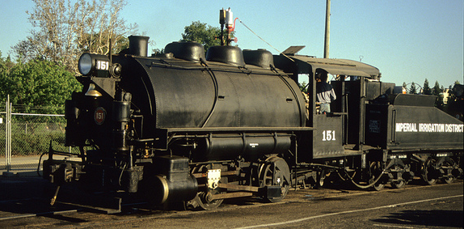

Last updated: 10 September, 2025
| Builder: | ALCO Cooke Works in Paterson, NJ |
| Build #: | 59389 |
| Date: | Oct 1918 |
| Engine #: | 151 (1) |
| Railroad: | Imperial Irrigation District |
| Website: | pioneersmuseum.net |
| Email: | info@pioneersmuseum.net |
| Location 1: | Pioneer Park Museum, Holton-Imperial Railway, 373 East Aten Road, Imperial, Ca. 92251 |
| GPS: | 32.825039, -115.504697 Locomotive. |
| Phone: | 760-352-1165 |
| Status: | Display |
| Notes: |
| Class: | |
| Gauge: | 4'-8½" |
| F.M.Whyte: | 0-4-0ST-T |
| Drivers: | 40” |
| Gear Ratio: | |
| Tractive Effort: | |
| Weight: | |
| Weight on Drivers: | |
| Length: | |
| Boiler: | |
| Cylinders: | |
| Top Speed: | |
| Horsepower: | |
| Fuel: | Oil |
| Fuel Type: | |
| Water: | |
| Steam psi: |